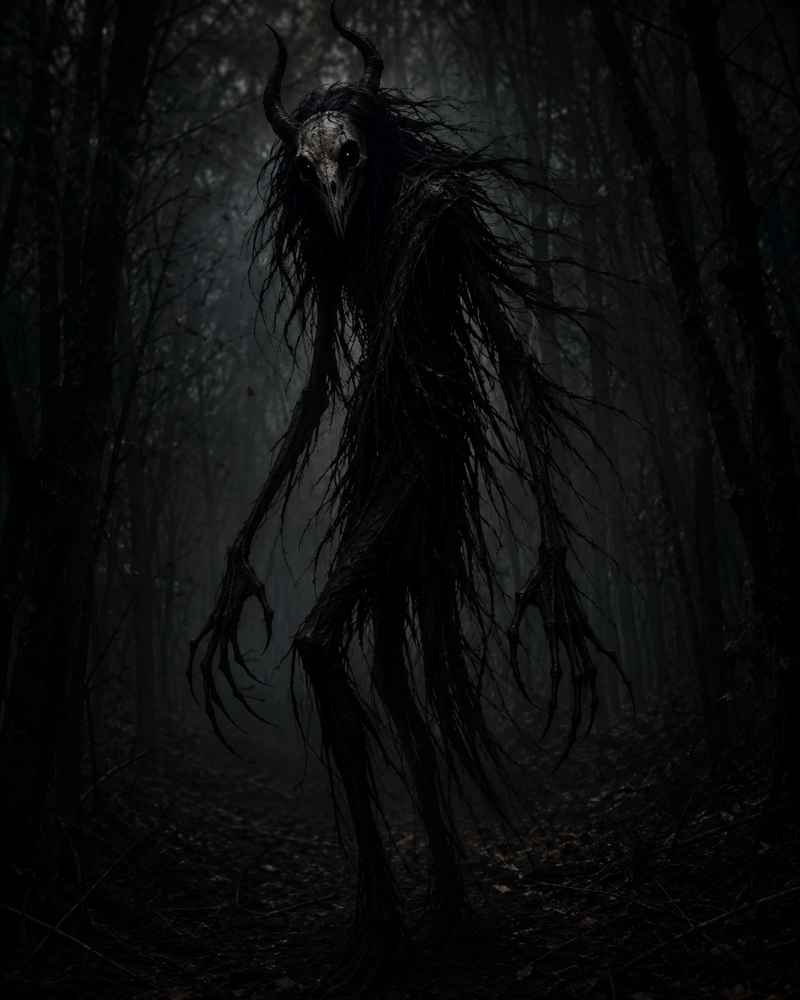

A criatura tem um corpo magro e alongado, quase parecendo um grande espantalho vivo. Sua pele (ou pelo) é escura, como sombra, e seus braços e pernas são bem compridos. Os dedos terminam em garras finas, que lembram galhos secos de árvore. No rosto, ela usa algo parecido com uma máscara de osso, com dois olhos totalmente pretos e brilhantes.
1. camuflagem Sombria
consegue ser misturar com as sombras das florestas
2 passos silenciosos
3. visão noturna
4. nevoa ilusoria
5 mudança de aparencia
6. ouvidos estremamente aguçados
7. velocidade impossivel de fugir
8. força que arranca arvores so de encostas um dedo
florestas antigas desetas e pouco iluminadas
pessoas que a viram falam que viram uma sombra alta, ate maior que as proprias arvores ele ataca quando ataca suas florestas ou animais viventes